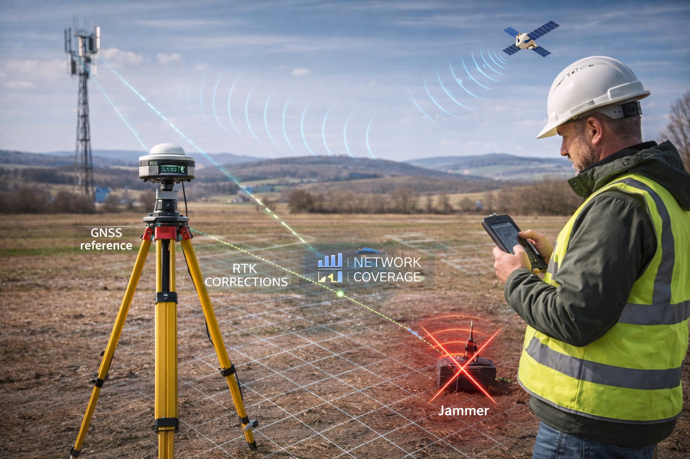
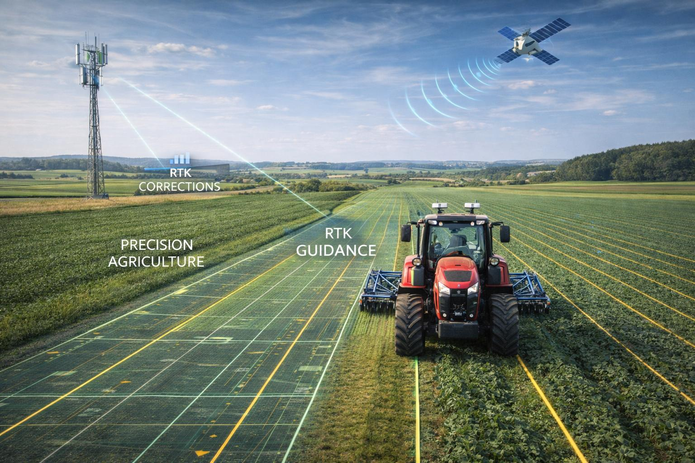
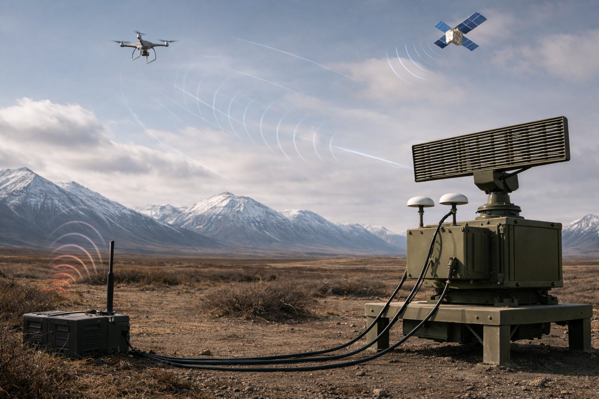

Engineering-Driven Solutions
Products are designed and developed by a specialized technical team with deep GNSS, embedded systems, and timing expertise.
Norvex develops and delivers RTK GNSS receivers, heading and north finding systems, precise timing solutions, correction services, and resilient PNT technologies built for real-world reliability in remote areas, harsh climates, and mission-critical operations.
A practical, engineering-focused approach to GNSS and PNT systems for customers who require performance, resilience, and responsive technical support.
Products are designed and developed by a specialized technical team with deep GNSS, embedded systems, and timing expertise.
Built for cold climates, remote operations, and challenging RF environments where reliability matters most.
Unified positioning, navigation, and timing solutions improve system performance and operational confidence.
Hardware and software can be adapted to fit project-specific requirements rather than forcing rigid off-the-shelf configurations.
Fast access to engineering support, remote diagnostics, and application-level troubleshooting.
Solutions shaped by real deployment needs in surveying, infrastructure, mining, agriculture, transportation, and public safety.
Built to support high-accuracy positioning, robust orientation, critical timing, and resilient PNT performance.
High-precision RTK receivers for surveying, construction, and industrial field applications.
Dual-antenna solutions for accurate heading and orientation in dynamic environments.
GNSS-based time servers and synchronization systems supporting PPS, NTP, and PTP.
Integrated GNSS, sensor, and algorithm-based systems for resilient performance in difficult conditions.
IMU, inertial sensors, and positioning modules for OEM and embedded integration.
RTK, DGPS, and PPP-RTK services to support high-accuracy operations across diverse applications.
Solutions engineered for real-world deployment across commercial and mission-critical environments.

Reliable, field-ready positioning for high-accuracy geospatial workflows.
Positioning and timing support for site operations, machine guidance, and infrastructure development.
Robust GNSS performance in remote and rugged environments with demanding operational requirements.

Accurate guidance and repeatable positioning to improve field efficiency and automated operations.
Reliable navigation and timing for fleet, mobility, robotics, and logistics applications.

Resilient positioning, navigation, and timing for defense operations in GNSS-challenged and contested environments.